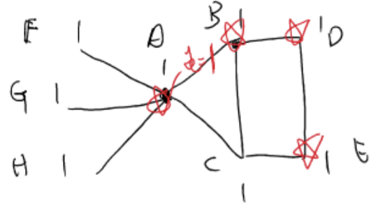

登高必自卑，自视太高不能达到成功，因而成功者必须培养泰然心态，凡事专注，这才是成功的要点。
考虑这样一个 Set cover 问题：
给定一个全集U 和一系列它的子集S1,S2,...,Sm⊆U，每一个子集都有一个权重C(Si)。
我们希望求一个权重最小的 cover：即所有满足⋃S∈TS=U 的集合T⊆{S1,...,Sm} 中，∑S∈TC(S) 最小的那个。
我们一般默认权重是非负的C(S)≥0。
# 贪心做法
考虑一个简单的贪心做法。
我们选择 “能覆盖范围和权重比值最大的集合”：
T1=S∈{S1,...,Sm}argmaxC(S)∣S∣,T2=S∈{S1,...,Sm}argmaxC(S)∣S∖T1∣,T3=S∈{S1,...,Sm}argmaxC(S)∣S∖(T1∪T2)∣,......Tm=S∈{S1,...,Sm}argmaxC(S)∣S∖(T1∪...∪Tm−1)∣.
这样我们找出了一个集合{T1,...,Tm} 作为答案。假如说原问题最优解的集合是V={V1,...,Vt}，那么根据贪心算法的过程，我们知道：对于任意1≤i≤m，
C(Ti)∣Ti∖(T1∪...∪Ti−1)∣C(Ti)∣Ti∖(T1∪...∪Ti−1)∣C(Ti)∣Ti∖(T1∪...∪Ti−1)∣......C(Ti)∣Ti∖(T1∪...∪Ti−1)∣≥C(V1)∣V1∖(T1∪...∪Ti−1)∣≥C(V2)∣V2∖(T1∪...∪Ti−1)∣≥C(V3)∣V3∖(T1∪...∪Ti−1)∣≥C(Vt)∣Vt∖(T1∪...∪Ti−1)∣.
根据不等式：
max{b1a1,...,blal}≥b1+...+bla1+...+al,
我们可以得到
C(Ti)∣Ti∖(T1∪...∪Ti−1)∣≥C(V1)+...+C(Vt)∑j=1t∣Vj∖{T1∪...∪Ti−1}∣.
注意到因为{V1,...,Vt} 是个 cover，所以
j=1∑t∣Vj∖{T1∪...∪Ti−1}∣≥∣U∖{T1∪...∪Ti−1}∣=∣U∣−∣T1∪...∪Ti−1∣.
我们知道最优解OPT=C(V1)+...+C(Vt)，再结合上述分析，所以有
∀1≤i≤m, C(Ti)∣Ti∖(T1∪...∪Ti−1)∣≥OPT∣U∣−∣T1∪...∪Ti−1∣
因此我们知道
i=1∑mC(Ti)≤OPT⋅(∣U∣∣T1∣+∣U∣−∣T1∣∣T2∖T1∣+∣U∣−∣T1∪T2∣∣T3∖(T1∪T2)∣+...+∣U∣−∣T1∪T2∪...∪Tm−1∣∣Tm∖(T1∪...∪Tm−1)∣).
实际上仔细观察可以知道右侧式子其实是个调和级数：
\begin{aligned}
& \frac{|T_1|}{|U|}=\underbrace{\frac{1}{|U|}+...+\frac{1}{|U|}}_{|T_1|\mbox{个}}\leq \frac{1}{|U|}+\frac{1}{|U|-1}+...+\frac{1}{|U|-|T_1|+1},\\
& \frac{|T_2\setminus T_1|}{|U|-|T_1|}\leq \frac{1}{|U|-|T_1|}+\frac{1}{|U|-|T_1|-1}+...+\frac{1}{|U|-|T_1|-|T_2\setminus T_1|+1},\\
\end{aligned}
其中∣U∣−∣T1∣−∣T2∖T1∣=∣U∣−∣T1∪T2∣。以此类推，我们可以得到
i=1∑mC(Ti)≤OPT⋅j=1∑∣U∣j1=O(log∣U∣).
因此实际上这个贪心算法得到的解之多是O(log∣U∣) 倍的近似解。
# Vertex Cover 的 layering technique
我们考虑如下 Vertex Cover 问题：
给定一个无向图G=(V,E)，每个点u∈V 有一个权重C(u)。
G 的一个 cover 是V 的一个子集T⊆V 使得每条边e∈E 都至少有一个与其相关联的点在T 中。
我们希望找到权重和最小的 cover。
很显然 Vertex Cover 可以归约到 Set Cover，我们只需要令U=E，然后每个点是一个子集：
Su={e∈E:u是e的一个端点}⊆U.
这样 Set Cover 的最优解就是 Vertex Cover 的最优解。
我们考虑另一个近似算法。首先定义一种 Degree-weighted graph:
一个图(V,E) 被称为是 degree-weighted 的，如果存在一个常数C 使得：
∀u∈V, deg(u)C(u)=C.
我们首先知道一个引理：
一个 degree-weighted 的图的任意 vertex cover 都是 2 - 近似的。
证明：这很简单，我们可以证明一个 degree-weighted 的图的最优 vertex cover ≥ 所有点权重和 / 2。
我们可以想象，每个点的权重都被分配到和它相关联的边上，如下图：
那么很显然，一个 vertex cover 需要盖住所有边，所以最优 vertex cover 的权重至少≥ 边数 ×C，也就是所有点权和的一半。
□
因此一个算法就是，我们可以把一个图拆成一个 degree weighted 的图，和一个剩余图的和。
我们只需要找出一个图中，deg(u)C(u) 最小的那个顶点u。然后呢，我们可以把图拆成两个图的和：
在上图中，最小的顶点A 对应的比值就是1/5。不难发现，这样拆分后，剩余图G2 中A 的权重就是 0 了，而G1 是一个 degree-weighted 的图。
根据前面的引理，G1 任意的 vertex cover 都是 2 - 近似的，因此我们只需要考虑G2 的 vertex cover 选法。
很显然，G2 中我们可以直接选择权重为 0 的那个点，这样的话G2 就会被化简：把和A 相关联的边都删掉。
然后重复上述过程，最后就可以得到一个 vertex cover 选法，而且相对于最优解是 2 - 近似的。
# Linear Programming 和 Integer Programming 的近似方法
我们首先回忆一下 linear programming 的 duality 和 slackness 的一些结论。
考虑下面两个 linear programming 问题，左侧的被称为 primary problem，右侧是它的 dual problem。其中，b,y 是m 维向量，c,x 是n 维向量，A 是m×n 维矩阵。
mins.t.cTxAx≥bx≥0maxs.t.bTyATy≤cy≥0
我们知道，这两个问题的最优解是相等的。而且有两个重要的结论：
(Weak Duality Theorem)
如果x,y 分别是 primary problem 和 dual problem 的 feasible solution（满足约束，但不一定是最优的），那么有cTx≥bTy。
(Complementary Slackness Conditions)
令x,y 分别是 primary problem 和 dual problem 的 feasible solutions。那么x,y 都是 optimal solution 当且仅当以下条件都满足：
- 对于每个1≤j≤n，要么xj=0，要么∑i=1mAi,jyi=cj；
- 对于每个1≤i≤m，要么yi=0，要么∑j=1nAi,jxj=bi。
而且互补松弛性还有一个有用的结论：
假设x,y 还是 primary problem 和 dual problem 的 feasible solution。
假设存在常数α,β 满足：
∀1≤i≤m, j=1∑nAi,jxj≤β⋅bi,∀1≤j≤n, i=1∑mAi,jyi≥cj/α,
那么我们知道cTx≤αβ 倍的最优解。
证明：注意到
i=1∑mj=1∑nAi,jxjyi=i=1∑m(j=1∑nAi,jxj)yi≤βi=1∑mbiyi,i=1∑mj=1∑nAi,jxjyi=j=1∑n(i=1∑mAi,jyi)xj≥α1j=1∑ncjxj.
因此
j=1∑ncjxj≤αβi=1∑mbiyi≤αβ⋅OPT.
□
下面我们回到 weighted vertex cover 的问题。并写出它的 linear programming 形式：
mins.t.u∈V∑C(u)xuxu+xv≥1, ∀(u,v)∈Exu≥0, ∀u∈V,maxs.t.e∈E∑yee:e关联u∑ye≤C(u), ∀u∈Vye≥0, ∀e∈E
注意，理论上xu 只能选 0,1（即选这个点，或不选这个点）。我们首先把整数规划放松到了线性规划，即把约束xu∈{0,1} 放松到xu≥0。
接下来我们利用互补松弛性手动解这个线性规划！（不依赖其他求解器）
我们希望找到 feasible solution x,y 满足以下条件：
- ∀u∈V，要么xu=0，要么αC(u)≤∑e关联uye≤C(u)；
- ∀e=(u,v)∈E，要么ye=0，要么1≤xu+xv≤β。
根据前面的讨论，这样找到的 feasible solution 一定会有cTx≤αβ 倍的最优解，也就是找到了个近似解。
我们取α=1,β=2 为例。即上面的互补松弛性条件变成：
- ∀u∈V，要么xu=0，要么∑e关联uye=C(u)；
- ∀e=(u,v)∈E，要么ye=0，要么1≤xu+xv≤2。
然后求解的算法过程如下。我们以一个例子来阐述这个过程。

- 初始化地，令所有xu=ye=0。此时它们不是 feasible solution，但平凡地满足互补松弛性条件。
- 选择一条未被 cover 的边e，譬如例子中是e=AB。我们增长ye，直到某一个点u∈V 满足了∑e关联uye=C(u)。在这个例子中，就会有ye=1，此时顶点A,B 都满足了
A:yAB+yAC+yAF+yAG+yAH=C(A)=1,B:yAB+yBD+yBC=C(B)=1.
- 然后我们令那些满足∑e关联uye=C(u) 的顶点u∈V 的xu=1。
- 重复 2-3 这个过程。
不难发现，整个过程下面互补松弛性的子条件都是满足的：
- ∀u∈V，要么xu=0，要么∑e关联uye=C(u)；
- ∀e=(u,v)∈E，要么ye=0，要么xu+xv≤2。
因为xu+xv≤2 是平凡满足的。我们实际上不断寻找未被 cover 的边，重复 2-3 过程，就是为了让x 成为一个 feasible solution，即满足1≤xu+xv 的部分。
我们可以继续完成上面的例子。第二次重复时，就会选中边DE，然后令yDE 增长到C(D)=1。此时顶点D,E 都满足
D:yBD+yDE=C(D)=1E:yDE+yCE=C(E)=1
注意，此时只有yAB=yDE=1，其余ye=0。然后我们把xD,xE 都设为 1。
重复 2 轮后，已经没有未被 cover 的边了。此时我们可以得到一个 feasible solution：
xF=xG=xH=xC=0,xA=xB=xD=xE=1.
然后可以得到一个 2 - 近似的结果，因为这个 feasible solution 是完全符合互补松弛性条件的。